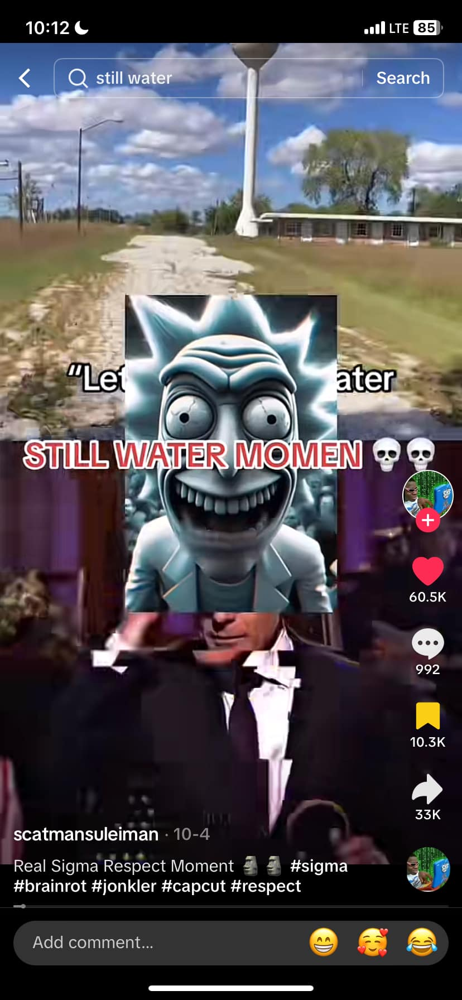

STOP SKIBIDI
SKIBIDI HAWK TUAH?
In a world full of sigmas, skibidis tend to activate their balkan rage too early, missing out on rizzing skills and decreasing their aura points, whats still water and lunchly anymore after then? You didn't understand any of that did you? Brainrot is currently a big problem for our younger generation, and we should be more aware of it.
